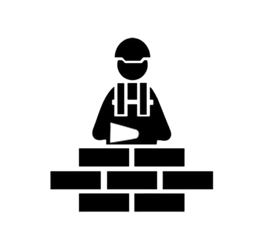

Tudo tem o seu tempo determinado,
e há tempo
para todo o propósito debaixo do céu.
Há tempo de nascer, e tempo de morrer; tempo de plantar, e tempo de
arrancar o que se plantou;
e tempo
de curar; tempo de derrubar,
e tempo de edificar;
Tempo de chorar, e tempo de rir; tempo de prantear, e tempo de dançar;
Tempo de espalhar pedras, e tempo de ajuntar pedras; tempo de abraçar,
e tempo de afastar-se de abraçar;
Tempo de buscar, e tempo de perder; tempo de guardar, e tempo de lançar
fora;
Tempo de rasgar, e tempo de coser; tempo de estar calado, e tempo de
falar;
Tempo de amar, e tempo de odiar; tempo de guerra, e tempo de paz.
Que proveito tem o trabalhador naquilo
em que trabalha?
Tenho visto o trabalho que Deus deu aos filhos dos homens, para com ele
os exercitar.
Tudo fez formoso em seu tempo; também pôs o mundo no coração do homem,
sem que este possa descobrir a obra que Deus fez desde o princípio até
ao fim.

Já tenho entendido que não há coisa
melhor para eles
do
que alegrar-se e fazer bem na sua vida;
E também que todo o homem coma e beba, e goze do bem de todo o seu
trabalho; isto é um dom de Deus.
Eu sei que tudo quanto Deus faz durará eternamente; nada se lhe deve
acrescentar, e nada se lhe deve tirar; e isto faz Deus para que haja
temor diante
dele.
e o que
há de ser, também já foi; e Deus
pede conta do que passou.
Vi mais debaixo do sol que no lugar do juízo havia impiedade, e no
lugar da justiça havia iniqüidade.
Eu disse no meu coração: Deus julgará o justo e o ímpio; porque há um
tempo para todo o propósito e para
toda a obra.
Disse eu no meu coração, quanto a condição dos filhos dos homens,
que Deus os provaria, para que assim pudessem ver que são em si mesmos
como os animais.
Porque o que sucede aos filhos dos homens,
isso mesmo também
sucede aos animais, e lhes sucede a mesma coisa;
como morre um, assim morre o outro; e todos têm o mesmo fôlego, e a
vantagem dos homens sobre os animais não
é nenhuma,
porque todos são vaidade.
Todos vão para um lugar; todos foram feitos do pó, e todos voltarão ao pó.
Quem sabe que o fôlego do homem vai para cima, e que o fôlego dos animais
vai para baixo da terra?
Assim que tenho visto que não há coisa melhor do que alegrar-se o homem
nas suas obras, porque essa é a sua
porção;
pois quem o fará voltar para ver o que será depois dele?
Eclesiastes 3:1-22